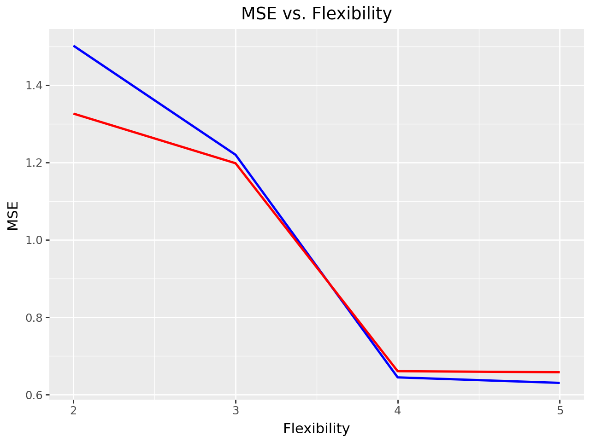

import pandas as pd
from sklearn.compose import ColumnTransformer
from sklearn.preprocessing import OneHotEncoder
from sklearn.preprocessing import StandardScaler
from sklearn.linear_model import LinearRegression
from sklearn.pipeline import Pipeline
from sklearn.metrics import mean_squared_errorPalmer Penguins Modeling
Import the Palmer Penguins dataset and print out the first few rows.
Suppose we want to predict bill_depth_mm using the other variables in the dataset.
Dummify all variables that require this.
import pandas as pd
# Step 1: Install the library
!pip install palmerpenguins
# Step 2: Import and load the dataset
from palmerpenguins import load_penguins
penguins = load_penguins()
# Step 3: View the dataset
penguins.head()Requirement already satisfied: palmerpenguins in /usr/local/lib/python3.10/dist-packages (0.1.4)
Requirement already satisfied: pandas in /usr/local/lib/python3.10/dist-packages (from palmerpenguins) (2.2.2)
Requirement already satisfied: numpy in /usr/local/lib/python3.10/dist-packages (from palmerpenguins) (1.26.4)
Requirement already satisfied: python-dateutil>=2.8.2 in /usr/local/lib/python3.10/dist-packages (from pandas->palmerpenguins) (2.8.2)
Requirement already satisfied: pytz>=2020.1 in /usr/local/lib/python3.10/dist-packages (from pandas->palmerpenguins) (2024.2)
Requirement already satisfied: tzdata>=2022.7 in /usr/local/lib/python3.10/dist-packages (from pandas->palmerpenguins) (2024.2)
Requirement already satisfied: six>=1.5 in /usr/local/lib/python3.10/dist-packages (from python-dateutil>=2.8.2->pandas->palmerpenguins) (1.16.0)| species | island | bill_length_mm | bill_depth_mm | flipper_length_mm | body_mass_g | sex | year | |
|---|---|---|---|---|---|---|---|---|
| 0 | Adelie | Torgersen | 39.1 | 18.7 | 181.0 | 3750.0 | male | 2007 |
| 1 | Adelie | Torgersen | 39.5 | 17.4 | 186.0 | 3800.0 | female | 2007 |
| 2 | Adelie | Torgersen | 40.3 | 18.0 | 195.0 | 3250.0 | female | 2007 |
| 3 | Adelie | Torgersen | NaN | NaN | NaN | NaN | NaN | 2007 |
| 4 | Adelie | Torgersen | 36.7 | 19.3 | 193.0 | 3450.0 | female | 2007 |
#penguins_dummies = pd.get_dummies(penguins[['species','island','sex']])
#penguins = pd.concat([penguins, penguins_dummies], axis=1)
#penguins.head()penguins = penguins.dropna()Let’s use the other variables to predict bill_depth_mm. Prepare your data and fit the following models on a training dataset subset of the entire dataset:
- Four different models, each containing a different set of predictor variables
Create a plot like the right plot of Fig 1. in our Model Validation chapter with the training and test error plotted for each of your four models.
Which of your models was best?
#from sklearn.linear_model import LinearRegression
#lr = LinearRegression()
#Label X and Y axis and train and test the data
#from sklearn.model_selection import train_test_split
#X = penguins[['sex_female','flipper_length_mm']]
#y = penguins['bill_depth_mm']
#X_train, X_test, y_train, y_test = train_test_split(X, y, test_size=0.25)lr_fit = lr.fit(X_train, y_train)
#train_preds = lr_fit.predict(X_train)
#test_preds = lr_fit.predict(X_test)Using flipper length and penguin sex to predict bill_depth
X = penguins.drop('bill_depth_mm', axis = 1)
y = penguins['bill_depth_mm']X_train, X_test, y_train, y_test = train_test_split(X, y, test_size=0.25)ct = ColumnTransformer(
[
("dummify", OneHotEncoder(sparse_output = False), ["sex"]),
("standardize", StandardScaler(), ["flipper_length_mm"])
],
remainder = "drop"
)
# creating the pipeline
lr_pipeline = Pipeline(
[("preprocessing", ct),
("linear_regression", LinearRegression())]
)
lr_pipelinePipeline(steps=[('preprocessing',
ColumnTransformer(transformers=[('dummify',
OneHotEncoder(sparse_output=False),
['sex']),
('standardize',
StandardScaler(),
['flipper_length_mm'])])),
('linear_regression', LinearRegression())])In a Jupyter environment, please rerun this cell to show the HTML representation or trust the notebook. On GitHub, the HTML representation is unable to render, please try loading this page with nbviewer.org.
Pipeline(steps=[('preprocessing',
ColumnTransformer(transformers=[('dummify',
OneHotEncoder(sparse_output=False),
['sex']),
('standardize',
StandardScaler(),
['flipper_length_mm'])])),
('linear_regression', LinearRegression())])ColumnTransformer(transformers=[('dummify', OneHotEncoder(sparse_output=False),
['sex']),
('standardize', StandardScaler(),
['flipper_length_mm'])])['sex']
OneHotEncoder(sparse_output=False)
['flipper_length_mm']
StandardScaler()
LinearRegression()
pipeline_fit = lr_pipeline.fit(X_train, y_train)# Predict models
predict_trainx = lr_pipeline.predict(X_train)
predict_testx = lr_pipeline.predict(X_test)mse_test=mean_squared_error(y_test, predict_testx)
mse_test1.3261704406582546mse_train=mean_squared_error(y_train, predict_trainx)
mse_train1.5016591503155008df =[]
df.append({
"Flexibility": 2,
"MSE_Train": mse_train,
"MSE_Test": mse_test
})Using flipper length and penguin sex and island to predict bill_depth
ct2 = ColumnTransformer(
[
("dummify", OneHotEncoder(sparse_output = False), ["sex","island"]),
("standardize", StandardScaler(), ["flipper_length_mm"])
],
remainder = "drop"
)
# creating the pipeline
lr_pipeline2 = Pipeline(
[("preprocessing", ct2),
("linear_regression", LinearRegression())]
)
lr_pipeline2Pipeline(steps=[('preprocessing',
ColumnTransformer(transformers=[('dummify',
OneHotEncoder(sparse_output=False),
['sex', 'island']),
('standardize',
StandardScaler(),
['flipper_length_mm'])])),
('linear_regression', LinearRegression())])In a Jupyter environment, please rerun this cell to show the HTML representation or trust the notebook. On GitHub, the HTML representation is unable to render, please try loading this page with nbviewer.org.
Pipeline(steps=[('preprocessing',
ColumnTransformer(transformers=[('dummify',
OneHotEncoder(sparse_output=False),
['sex', 'island']),
('standardize',
StandardScaler(),
['flipper_length_mm'])])),
('linear_regression', LinearRegression())])ColumnTransformer(transformers=[('dummify', OneHotEncoder(sparse_output=False),
['sex', 'island']),
('standardize', StandardScaler(),
['flipper_length_mm'])])['sex', 'island']
OneHotEncoder(sparse_output=False)
['flipper_length_mm']
StandardScaler()
LinearRegression()
pipeline_fit2 = lr_pipeline2.fit(X_train, y_train)predict_trainx2 = lr_pipeline2.predict(X_train)
predict_testx2 = lr_pipeline2.predict(X_test)mse_test2=mean_squared_error(y_test, predict_testx2)
mse_test21.1979107085852558mse_train2=mean_squared_error(y_train, predict_trainx2)
mse_train21.2198094724845048df.append({
"Flexibility": 3,
"MSE_Train": mse_train2,
"MSE_Test": mse_test2
})Using flipper length, penguin sex, island, and species to predict bill_depth
ct3 = ColumnTransformer(
[
("dummify", OneHotEncoder(sparse_output = False), ["sex","island","species"]),
("standardize", StandardScaler(), ["flipper_length_mm"])
],
remainder = "drop"
)
# creating the pipeline
lr_pipeline3 = Pipeline(
[("preprocessing", ct3),
("linear_regression", LinearRegression())]
)
lr_pipeline3Pipeline(steps=[('preprocessing',
ColumnTransformer(transformers=[('dummify',
OneHotEncoder(sparse_output=False),
['sex', 'island', 'species']),
('standardize',
StandardScaler(),
['flipper_length_mm'])])),
('linear_regression', LinearRegression())])In a Jupyter environment, please rerun this cell to show the HTML representation or trust the notebook. On GitHub, the HTML representation is unable to render, please try loading this page with nbviewer.org.
Pipeline(steps=[('preprocessing',
ColumnTransformer(transformers=[('dummify',
OneHotEncoder(sparse_output=False),
['sex', 'island', 'species']),
('standardize',
StandardScaler(),
['flipper_length_mm'])])),
('linear_regression', LinearRegression())])ColumnTransformer(transformers=[('dummify', OneHotEncoder(sparse_output=False),
['sex', 'island', 'species']),
('standardize', StandardScaler(),
['flipper_length_mm'])])['sex', 'island', 'species']
OneHotEncoder(sparse_output=False)
['flipper_length_mm']
StandardScaler()
LinearRegression()
pipeline_fit3 = lr_pipeline3.fit(X_train, y_train)predict_trainx3 = lr_pipeline3.predict(X_train)
predict_testx3 = lr_pipeline3.predict(X_test)mse_test3=mean_squared_error(y_test, predict_testx3)
mse_test30.6606365885053361mse_train3=mean_squared_error(y_train, predict_trainx3)
mse_train30.644624099425044df.append({
"Flexibility": 4,
"MSE_Train": mse_train3,
"MSE_Test": mse_test3
})Using flipper length, bill length, penguin sex, island and species to predict bill_depth
ct4 = ColumnTransformer(
[
("dummify", OneHotEncoder(sparse_output = False), ["sex","island","species"]),
("standardize", StandardScaler(), ["flipper_length_mm", "bill_length_mm"])
],
remainder = "drop"
)
# creating the pipeline
lr_pipeline4 = Pipeline(
[("preprocessing", ct4),
("linear_regression", LinearRegression())]
)
lr_pipeline4Pipeline(steps=[('preprocessing',
ColumnTransformer(transformers=[('dummify',
OneHotEncoder(sparse_output=False),
['sex', 'island', 'species']),
('standardize',
StandardScaler(),
['flipper_length_mm',
'bill_length_mm'])])),
('linear_regression', LinearRegression())])In a Jupyter environment, please rerun this cell to show the HTML representation or trust the notebook. On GitHub, the HTML representation is unable to render, please try loading this page with nbviewer.org.
Pipeline(steps=[('preprocessing',
ColumnTransformer(transformers=[('dummify',
OneHotEncoder(sparse_output=False),
['sex', 'island', 'species']),
('standardize',
StandardScaler(),
['flipper_length_mm',
'bill_length_mm'])])),
('linear_regression', LinearRegression())])ColumnTransformer(transformers=[('dummify', OneHotEncoder(sparse_output=False),
['sex', 'island', 'species']),
('standardize', StandardScaler(),
['flipper_length_mm', 'bill_length_mm'])])['sex', 'island', 'species']
OneHotEncoder(sparse_output=False)
['flipper_length_mm', 'bill_length_mm']
StandardScaler()
LinearRegression()
pipeline_fit4 = lr_pipeline4.fit(X_train, y_train)predict_trainx4 = lr_pipeline4.predict(X_train)
predict_testx4 = lr_pipeline4.predict(X_test)mse_test4=mean_squared_error(y_test, predict_testx4)
mse_test40.6578821454729351mse_train4=mean_squared_error(y_train, predict_trainx4)
mse_train40.6304091586070846df.append({
"Flexibility": 5,
"MSE_Train": mse_train4,
"MSE_Test": mse_test4
})df = pd.DataFrame(df)
df| Flexibility | MSE_Train | MSE_Test | |
|---|---|---|---|
| 0 | 2 | 1.501659 | 1.326170 |
| 1 | 3 | 1.219809 | 1.197911 |
| 2 | 4 | 0.644624 | 0.660637 |
| 3 | 5 | 0.630409 | 0.657882 |
from plotnine import ggplot, aes, geom_line, labs
# Assuming df is your DataFrame and 'Flexibility', 'MSE_Train', 'MSE_Test' are column names
(ggplot(df, aes(x='Flexibility'))
+ geom_line(aes(y='MSE_Train'), color='blue', size=1, linetype='solid')
+ geom_line(aes(y='MSE_Test'), color='red', size=1, linetype='solid')
+ labs(x='Flexibility', y='MSE', title='MSE vs. Flexibility')
)
The best model would be the last model with the most variables because it has the lowest MSE.